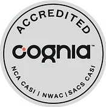

Rolling Admissions
Now Accepting Applications
Applications reviewed year-round for Pre-K through 8th grade. Military families and students of all religious backgrounds welcome!
Serving Fayetteville since 1956, St. Ann Catholic School provides quality education in a structured environment where academic excellence and Catholic identity are priorities. We are a culturally diverse school that serves our entire military and civilian community.
Love God. Cherish family. Challenge our minds. Celebrate our differences.
Daily prayer led by students, weekly Mass as a school family, and students serving as altar servers, lectors, and choir members
Rigorous curriculum aligned with NC Standard Course of Study, 11:1 student-teacher ratio, and Cognia accreditation
An inclusive school serving students of every race, culture, and religious background, with strong support for military families
Serving downtown Fayetteville and the Cape Fear region with Catholic education since 1956
Stay connected with what's happening at St. Ann
Applications reviewed year-round for Pre-K through 8th grade. Military families and students of all religious backgrounds welcome!
Financial assistance available through NC Opportunity Scholarship Grants and Diocese of Raleigh tuition assistance programs.
Our experienced principal leads a team of licensed professionals dedicated to high expectations and educating the whole child.
Simple, parent-friendly next steps for families exploring or returning to St. Ann.
Visit campus, meet our staff, and see the school day in motion.
Applications are reviewed year-round for Pre-K through 8th grade.
Call the school office for tuition, scholarships, and family support.
Comprehensive Catholic education from preschool through 8th grade
Foundation learning in a nurturing Catholic environment preparing students for kindergarten success with age-appropriate activities.
Rigorous curriculum aligned with NC Standard Course of Study, enriched with Catholic values and diverse learning opportunities.
Challenging academic preparation with extracurricular enrichment including STEM, band, and choral music programs.
St. Ann follows the academic direction of the Diocese of Raleigh Office of Catholic Schools. Diocesan schools align instruction with the North Carolina Standard Course of Study while integrating Gospel values, Church teaching, and a Catholic worldview throughout school life.
St. Ann Catholic School pairs a structured academic environment with a deeply personal Catholic community. Students are formed to think clearly, serve generously, and grow in faith.
Families choose St. Ann for small classes, a diverse and welcoming culture, weekly Mass, and a downtown Fayetteville campus rooted in more than six decades of Catholic education.
A warm introduction to the people, prayer, and purpose that shape each day at St. Ann.

First all-inclusive school in North Carolina - welcoming all students since 1956
50% of our students are military dependents. We understand military families and support their unique needs.
Students of any race, color, national origin, and religious preference welcome in our inclusive community.
Recently completed our 5-year accreditation review, ensuring rigorous and relevant 21st-century education.
11:1 student-teacher ratio with 121 total students ensures personalized attention for every child.
Our Catholic identity, rooted in Gospel values and approved by the Diocese of Raleigh, shapes everything we do:
Each day begins and ends with prayer led by student leaders, fostering personal relationships with God.
Students attend Mass as a school family, with many serving as altar servers, lectors, and choir members.
Students serve others through age-appropriate community service projects, living our motto "Depart to Serve."
Students participate in Reconciliation during Advent and Lent seasons, deepening their spiritual growth.
Real public reviews from parents and alumni about St. Ann Catholic School in Fayetteville.
“An outstanding place for my children to learn and grow.”
“Teachers truly care about the students.”
“St. Ann's is one big family.”
Review excerpts sourced from Private School Review and Niche.
With rolling admissions and a welcoming environment for military families and students of all backgrounds, discover why St. Ann has been Fayetteville's choice for quality Catholic education for over 68 years.